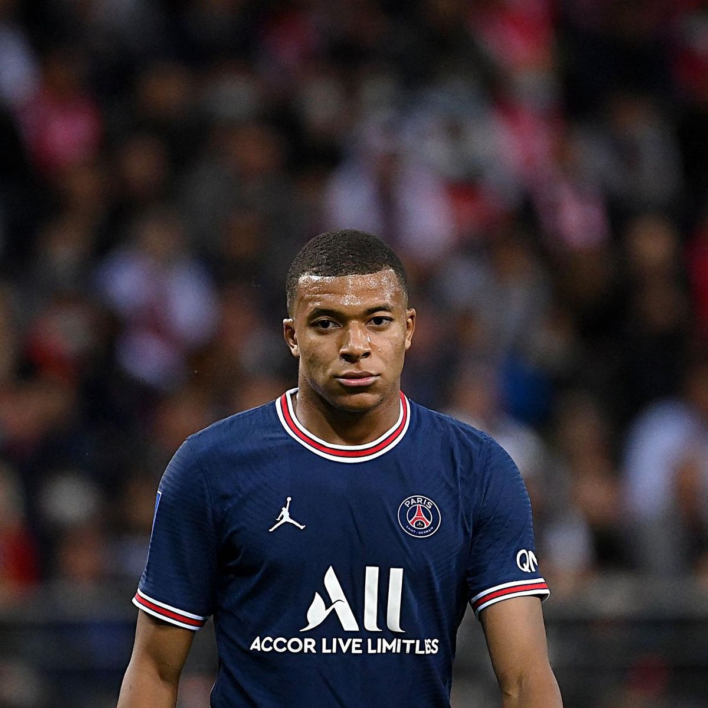

Kylian Mbappé 7
| Birthdate | December 20th 1998, Paris |
|---|---|
| Nationality | French |
| Profile | 178cm / 73kg |
| Skills | Right |
| Signed at PSG | August 31st 2017 |
Born in the capital in 1998 and raised in a sporting family in the Parisian suburb of Bondy, Kylian Mbappé first joined the French National Football Institution at Clairefontaine before moving to Monaco’s academy. At the age of 17, the prodigy exploded onto the European scene and became a Ligue 1 champion in 2017.
Signed by Paris Saint-Germain just a few weeks after Neymar Jr put pen to paper, the man that led Les Bleus to World Cup glory in 2018 quickly became a key player in Rouge et Bleu.
The third-highest goal scorer in club history, the Paris No.7 has developed an unquenchable thirst for records. In the 2020-21 season he netted a personal best 42 goals in all competitions for the side from the French capital.
10Games played |
876Minutes played |
10Starts |
5Sub off |